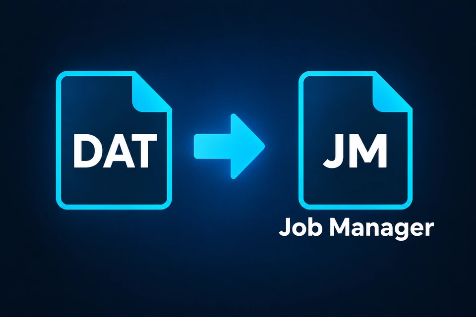
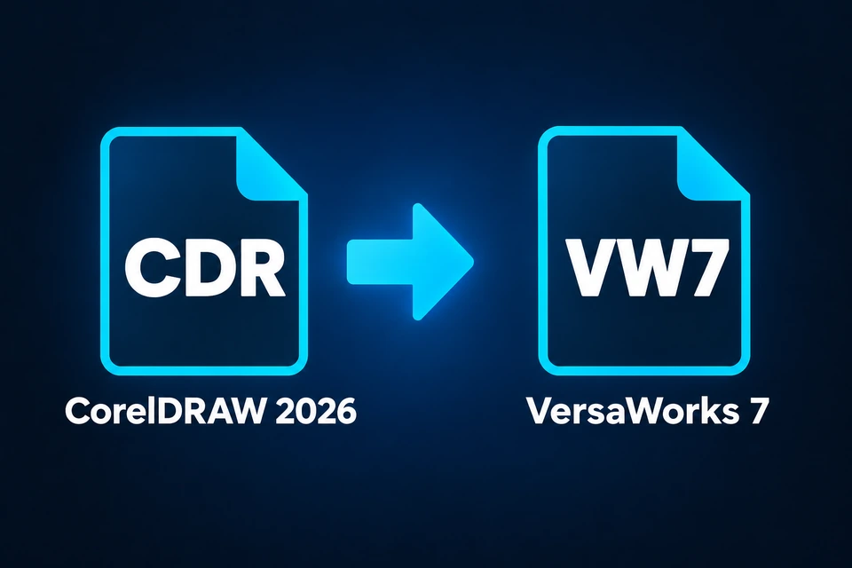
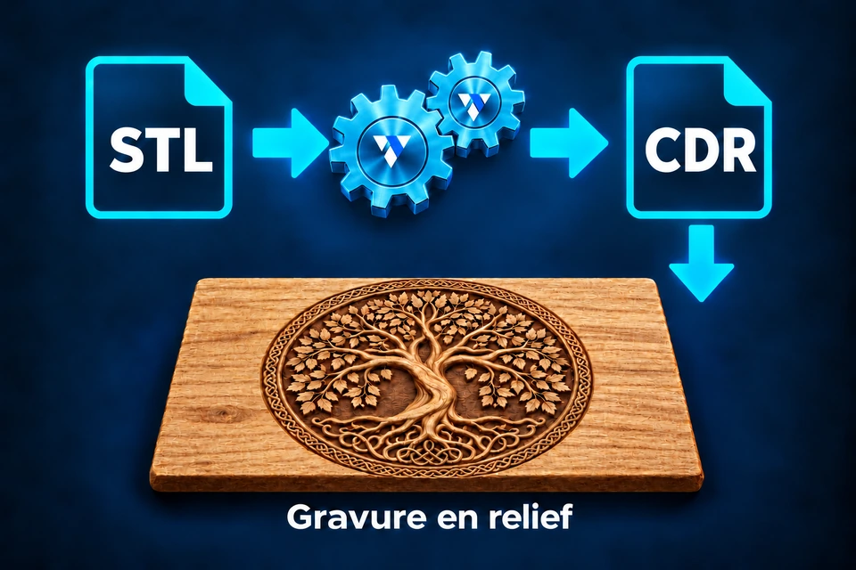
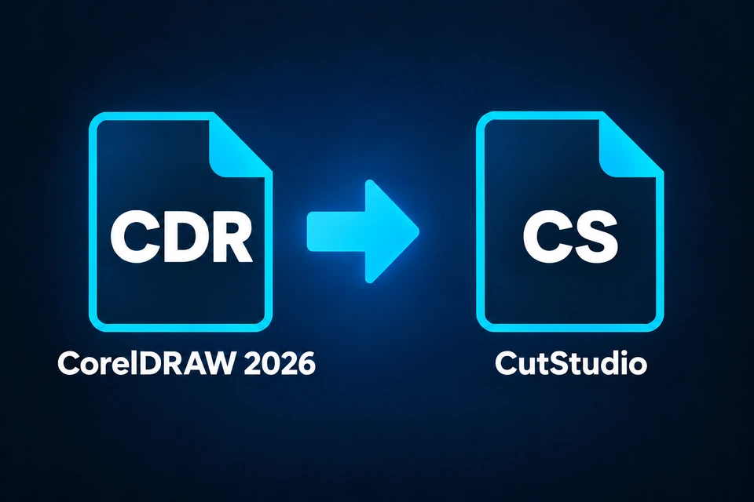
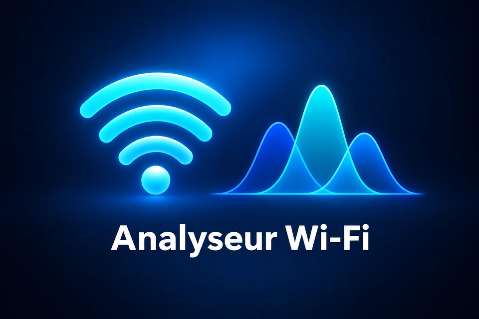
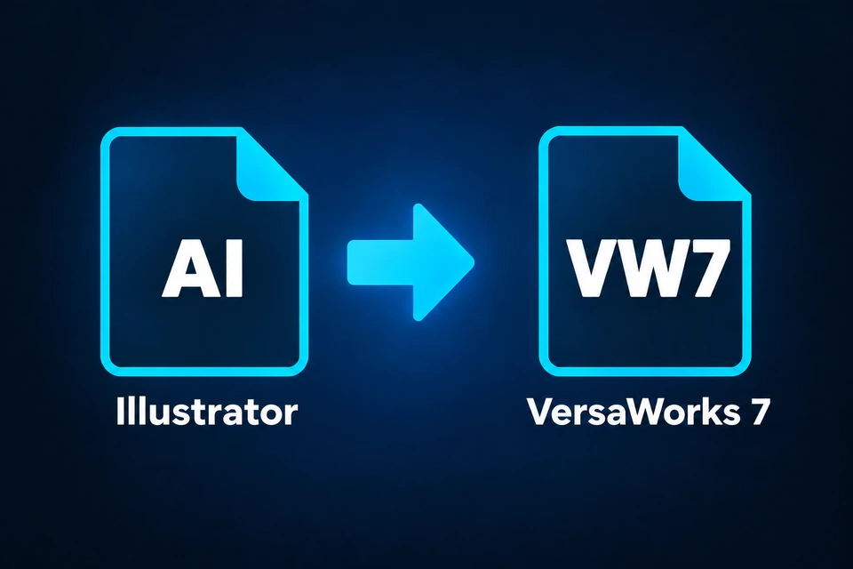

Disponible · v2.1
Convertisseur DAT → Job Manager
Convertissez vos anciens fichiers DAT Epilog Laser vers Job Manager. Un utilitaire indépendant pour les utilisateurs Epilog Laser, gratuit sous Windows 10 et 11.
Découvrir le logiciel →
Découvrez des logiciels gratuits, conçus avec passion pour simplifier vos tâches et répondre à des besoins concrets, dans différents domaines. VAP Technologie propose notamment un convertisseur DAT Epilog Laser vers Job Manager gratuit pour Windows.

Convertissez vos anciens fichiers DAT Epilog Laser vers Job Manager. Un utilitaire indépendant pour les utilisateurs Epilog Laser, gratuit sous Windows 10 et 11.
Découvrir le logiciel →
Envoyez votre travail directement dans la file d’attente de VersaWorks 7 grâce à un bouton intégré à CorelDRAW 2026.

Du modèle STL au fichier CDR : une conversion VAP en nuances de gris pour préparer vos projets de gravure en relief.

Préparez vos créations CorelDRAW pour CutStudio et facilitez le passage de vos fichiers vers la découpe.

Un projet VAP pour analyser votre environnement Wi-Fi et repérer vos points de mesure sur un plan à plusieurs niveaux.

Envoyez votre travail directement dans la file d’attente de VersaWorks 7 grâce à un bouton intégré à Illustrator.
De nouveaux logiciels seront ajoutés au catalogue au fur et à mesure de leur publication.
VAP Technologie est un projet personnel et indépendant créé par VAP, né d'une passion pour l'informatique, la technologie et le développement de solutions pratiques.
L'objectif est simple : concevoir et partager des logiciels qui répondent à des besoins réels, facilitent certaines tâches et apportent des solutions accessibles à tous.
Chaque programme est développé avec la volonté de privilégier la simplicité, l'utilité et l'efficacité.
VAP Technologie n'est pas limité à un domaine particulier. Le projet évolue au fil des idées, des besoins rencontrés et des nouvelles possibilités technologiques.
Tous les logiciels sont proposés gratuitement, dans un esprit de partage et d'amélioration continue.
Une question, une suggestion ou une difficulté avec un logiciel ? Contactez-nous.
Les logiciels VAP restent gratuits.
Votre soutien est facultatif et contribue au développement des logiciels.
♡ Faire un don avec PayPal ↗